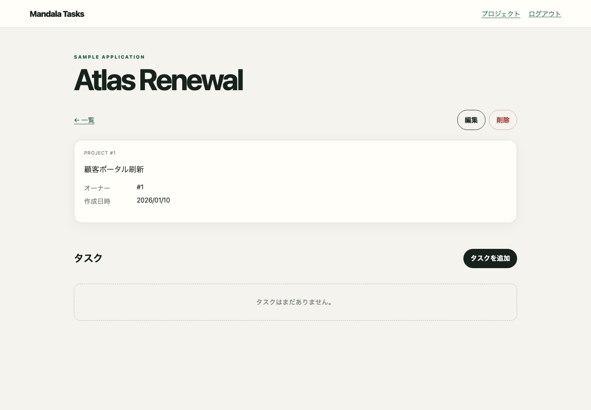
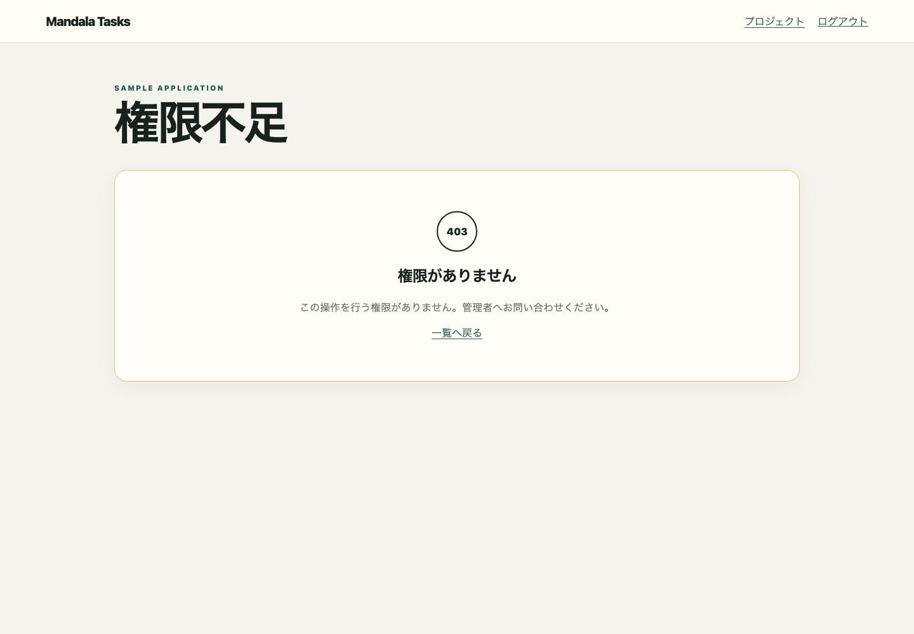

screen:/projects/newOBSERVEDプロジェクト作成成功
終了/projects/{id}screen:/projects/{id}screen:/projects/{id}Frontend route /projects/{id}


この画面を開始または終了とする、E2Eで観測済みの1対1の画面遷移です。
screen:/projects/newscreen:/projects/{id}screen:/projects/{id}screen:/projectsscreen:/projects/{id}/editscreen:/projects/{id}screen:/tasks/{id}screen:/projects/{id}各操作の開始状態、終了状態、順序、role、feature flag、結果、関連HTTPを表示します。
click/projects/{id}{}
mandala/snapshots/ui/forbidden.json